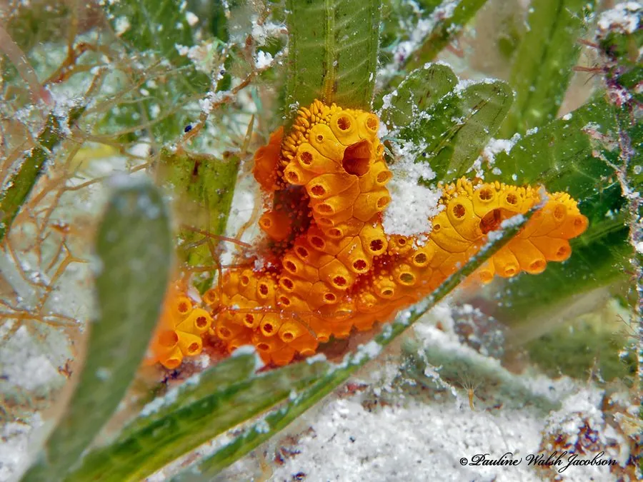

其他无脊椎动物 · 动物界
紫拟菊海鞘 Botrylloides violaceus

群体呈紫色胶质片状、个体排成枝状的海鞘，附着于船底与养殖设施，原产西北太平洋，已成多地入侵种。
- 分类
- 门脊索动物门纲海鞘纲目复鳃目科菊海鞘科属拟菊海鞘属
- 栖息环境
- 码头、浮筏、船底、养殖网箱与岩礁表面
- 地理分布
- 原产西北太平洋，现入侵北美、欧洲与澳大利亚沿海
- 保护级别
- 入侵物种，无保护需求，需监测与防除
物种志
紫拟菊海鞘是群体海鞘，群体呈薄片状或块状，厚约数毫米，表面光滑呈胶质，颜色从紫红、橙黄到淡褐不等。群体中的个体呈细长管状，排列成弯曲的分枝或链状，各自有入水管和出水管，共同埋在一个胶质基座里，一个个小孔在表面排成花纹。
它原产西北太平洋，包括中国、日本和韩国沿海，随船底污损传播到北美东西海岸、欧洲和澳大利亚，成为常见的入侵污损生物。它以滤食浮游生物为生，繁殖力强，能通过群体断裂和幼虫两种方式扩散，在码头、浮筏和养殖网箱上迅速覆盖基质。它会与牡蛎、贻贝争夺附着空间，增加船体阻力，管理以定期清理和防污处理为主。
形态与习性
- 群体形态薄片状或块状，胶质，厚数毫米
- 颜色紫红、橙黄至淡褐
- 个虫排列细长管状，排成弯曲分枝或链状
- 食性滤食浮游生物
- 扩散群体断裂与幼虫两种方式
- 危害与牡蛎贻贝争附着空间，增加船阻
趣味知识
- 它贴在码头下面像一层紫色果冻，其实是成百上千个个体共用的基座。
- 断下来的一小块群体粘到新地方，就能长成新的一片。
- 它从西北太平洋搭船出海，如今在北美东岸的养殖场里成了常客。